Underglaze
Understand pottery underglazes: Why they brush differently, how they fire, why clears fail over them, and how to make your own recipes. In technical rather than art language.
Key phrases linking here: diy underglazes, diy underglaze, underglazes, under glaze, underglaze - Learn more
Details
Underglazes are often described as romantic studio products, using flowery art language. But what actually are they? Underglazes are heavily pigmented ceramic compounds, normally applied by brushwork, to leather-hard or greenware and covered with a transparent glaze. Commercial underglazes are pigmented using ceramic stains, often encapsulated (metal oxides are also used but normally confined to blacks, browns, and blues). Underglaze emphasis is very bright coloration and high opacity. These are typically delivered by simply using a high percentage of stain, but there is a bettr way.
An underglaze is not the same as a ceramic slip or engobe (the latter being thicker, fit-driven body-adjustment layers). Potters and hobbyists seldom make their own underglazes; thus, creating a market for bottled products. That being said, making your own underglazes enables tuning characteristics and performance (and saving money). And can save a lot of money.
To have good brushing properties, underglazes need to be heavily gummed and gelled (e.g. CMC gum, Veegum CER) and thus dry slowly and hard. With sufficient gelling, very high water contents are possible (so multiple coats may be needed). Underglaze brushing mediums need plenty of fine-particled clay in the recipe so they can shrink with, and stay adhered to, the body when applied to leather-hard ware (commercial products are gummed enough that they can also be painted onto bisque or dried ware). But this is not as good as application to leather-hard surfaces, early contact enables better physical adherence.
Underglazes sinter during bisque, so their bond with the surface is mechanical. Underglazes need to have a low LOI (to avoid bubble-clouding the overglaze). And they need to be tuned not to overmelt at the target temperature (and thus bleed at brushstroke edges) or undermelt (and thus fire-bond poorly to the surface). Unfortunately, this ideal is not met by all commercial products.
Potters and hobbyists often have difficulty finding an overglaze that fires transparent over an underglaze. Transparent glazes often have micro-bubble clouds that obscure the underglaze decoration (especially high-boron, zinc or high melt viscosity). Generally, it is best to use a fluid-melt transparent and apply it as thinly as possible. It can take lots of experimenting to find a glaze and application technique that consistently works. At low temperatures, potters find better success; transparent glazes often melt more readily, application can be thinner and LOIs are lower.
As noted, it is common for underglaze products to not allow passage of water to the degree of the surrounding bisque. This can be especially true where the underglaze has not been fired on, gum-dried surfaces can be quite impervious to water passage. Dipping glazes can even resist these areas, developing pinholes and bare spots. The most practical solution is to apply the transparent as a gummed brushing glaze. Even then, drying over the underglaze is slower, and multiple coats can be required.
Recipes
We did lots of work on a cone 6 fluid melt base transparent, partly for use over underglazes. Our most practical finds were G3806C and its derivatives. We have also done lots of work on engobe base recipes (sometimes suitable for underglazes), examples are L3954B recipe for cone 6 stonewares, L3954N for cone 10 stonewares and L3685Z2 and L3685Z3 for low temperature (all of these have enough documentation to enable adjusting their firing shrinkage and thermal expansion fit).
A possible strategy for developing your own underglazes: Use a mix of ball clay and flux (usually feldspar) as the slurry medium. For lighter colors, a kaolin/bentonite mix might be better than ball clay. For lower temperatures use a feldspar/frit mix as the flux. Start testing with a 50:50 clay/flux mix. Use as much flux as can be tolerated without edge bleeding or loss of opacity. Mix in the minimum percentage of stain needed for color brightness. The stain percentage often changes application and melting behavior enough that the base-to-stain and clay-to-flux ratios must be re-tuned after color addition. It can take time to note what to change. If it is too powdery on bisque, more clay is needed. If the fired surface is not mature enough it needs more feldspar. If the color is not intense enough it needs more stain. If it doesn’t paint well enough it needs more CMC gum.
Selection of stain type is important, some work well in underglazes, others not. Some research and testing will quickly flag the ones to avoid.
Related Information
This pottery glaze is not flaking off - the underglaze is.
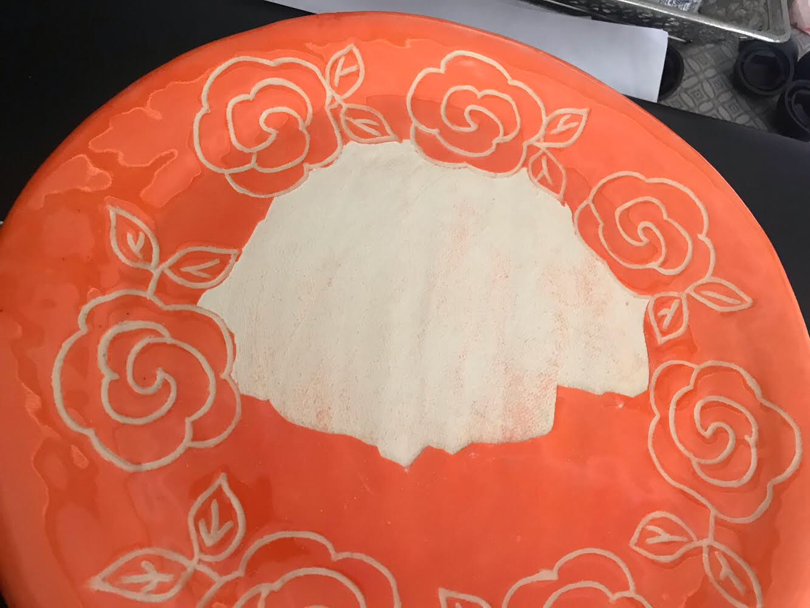
This picture has its own page with more detail, click here to see it.
Pure ceramic stain powders don't melt at typical pottery temperatures so they cannot bond with clay body surfaces. They don't suspend in water and don't harden on drying. Pure stains contribute only one ceramic property: Color! Commercial underglazes sold in jars dilute stains into a recipe of materials, a 'base medium', designed to impart the missing properties. Unfortunately, consider a problem: Blue stains are fluxes and potent at low percentages. Orange stains (and others) are refractory and require much higher percentages. But for convenience underglaze manufacturers will want to use the same medium and percentage pigment to make an entire line of underglazes. That causes the problem seen here - flaking is happening at the interface between the body and orange underglaze. This underglaze recipe needs more frit (or a more potent one) so that enough melting occurs to create a better bond. For some colors it can thus be an advantage to make your own underglazes.
Underglazes, engobe, a good transparent glaze and cone 03. Life is good!
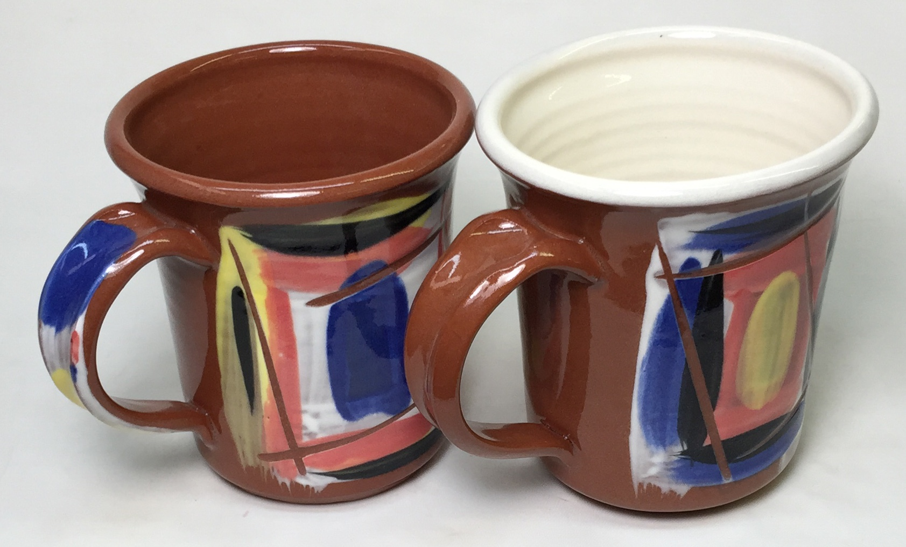
This picture has its own page with more detail, click here to see it.
The white engobe was applied by pouring at leather hard stage. The underglazes were also painted on at leather hard. The mugs were then dried, cleaned, bisque fired, dipping in clear glaze and final fired to cone 03. The clay and engobe have frit additions to make them vitrify at low temperatures.
Mural made using talc body and underglazes only
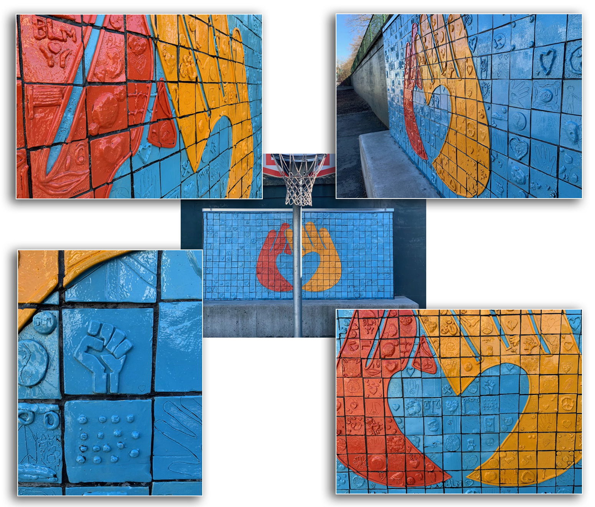
This picture has its own page with more detail, click here to see it.
Anti-racism themed, this was a project by students in a school in Vancouver, BC. The clay is Plainsman L213, a talc-ball clay body. Spectrum underglazes. Pieces were fired at cone 04.
These Stoneware Potters Do Something Unusual:
They make certain pieces using the low fire process
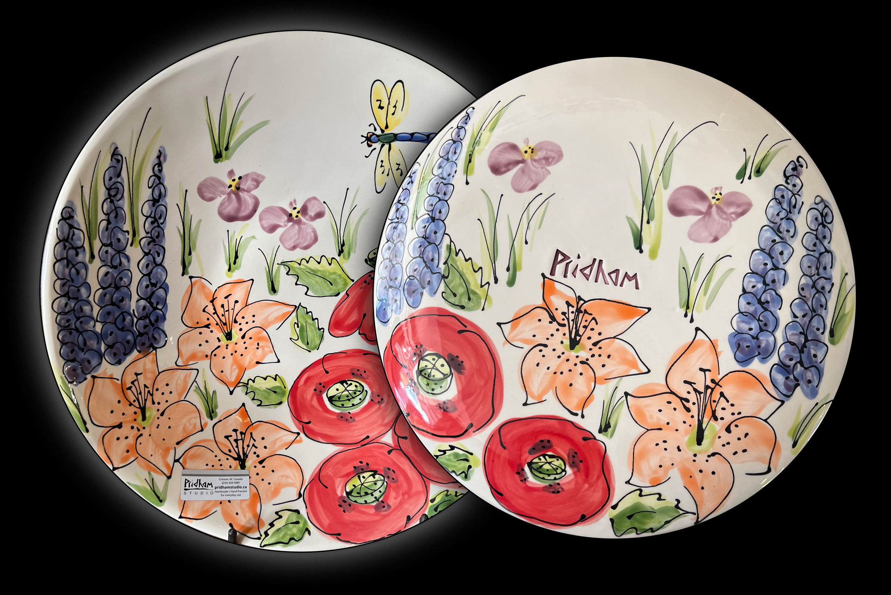
This picture has its own page with more detail, click here to see it.
Come 6 stoneware is super for most pieces. But there is some things you just cannot do. For example, you can decorate the underside! The one on the right is the back side of the plate. This is Plainsman Snow clay, it has 25% absorption at cone 06-04, this level of porosity is so high that the body can actually absorb the molten glaze if it is melt-fluid enough. However, when fired at cone 06 the body does not absorb any of the glaze. And the plates stay flat when fired on stilts. These are done by the team of Micah & Jeremiah Wassink of Creston, BC (at Pridham Studio). They make matching mugs, but fire those at cone 6 using underglaze decoration with a clear overglaze. But these plates are decorated using a combination of heavily pigmented viscous-melt low-fire glazes and a black underglaze and then finished with a thin layer of transparent glaze. Since the glaze is not crazed, water is not able to penetrate into the body. And the layer of clear glaze isolates the heavily pigmented colors from food. Even though they are low fire, these pieces are functional and food safe.
"Girls on the March" by Stephanie Osser - Underglaze decorated
This picture has its own page with more detail, click here to see it.
Stephanie decorated this porcelain plate using Amaco Velvet underglazes on both unfired porcelain and touched up on bisque (left image). She over-painted Amaco HF-9 Zinc-Free Clear (at least 3 coats in the center to make it pool into the recessed parts of the image, so it is flat to the touch like émail ombrants technique). The plate rim is a shallow bas-relief so two coats of clear were sufficient there. She fired it to cone 6 (right).
How can underglaze and engobe colors be this bright?
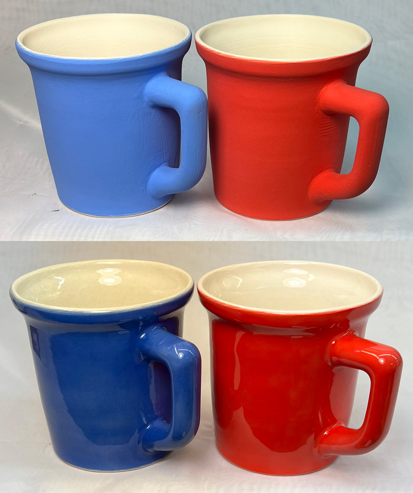
This picture has its own page with more detail, click here to see it.
Top are V-326 and V-388 underglazes, painted on and bisque fired at cone 04. Although the layer is thin the coverage is very good and the brightness is stunning. How can these colors be so bright? Using very high, and expensive, percentages of stain. That explains why these commercial underglazes are double or triple the cost of a typical commercial glaze. The bottom mugs are clear-glazed and fired at cone 05, the one on the left with Amaco LG-10, The one on the right is Spectrum 700. The latter produces better results over the underglaze and is more transparent and less yellowish on the body.
Can you make bright-colored engobes and underglazes like this? Yes. Start with 50% stain and 50% stain medium (the percentage needed varies by color and type of stain).
Underglazes are more opaque than glazes of the same color
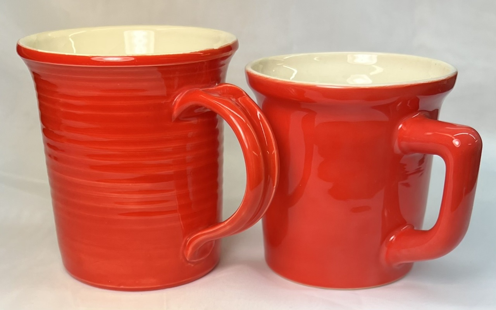
This picture has its own page with more detail, click here to see it.
On the left is Spectrum 748 fire engine red cone 04 glaze. With three coats. On the right is Amaco V-388 underglaze, also with three coats. It is covered with Spectrum 700 transparent. Both were glaze fired to cone 05 and bisque fired to cone 04. The color intensity of the glaze on the left varies with thickness, the ridges of the throwing lines are clearly highlighted by this. But underglaze on the right is completely opaque, there is no variation on any contours. Of course, the underglaze method is more costly, the bottles are three times the price of those of the glaze of the same color.
Underglaze decoration at low, medium and high temperature reduction
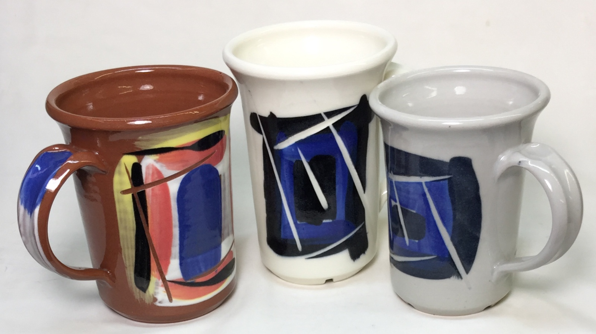
This picture has its own page with more detail, click here to see it.
Left is Plainsman Zero3 stoneware fired at cone 03. Middle is Polar Ice fired at cone 6d. Right is Plainsman P600 fired at cone 10R. The same black and blue underglazes are used on all three, but each has its own transparent glaze (left G2931K, middle G3806C, right G1947U).
Underglazes at low fire are brighter than at medium temperature
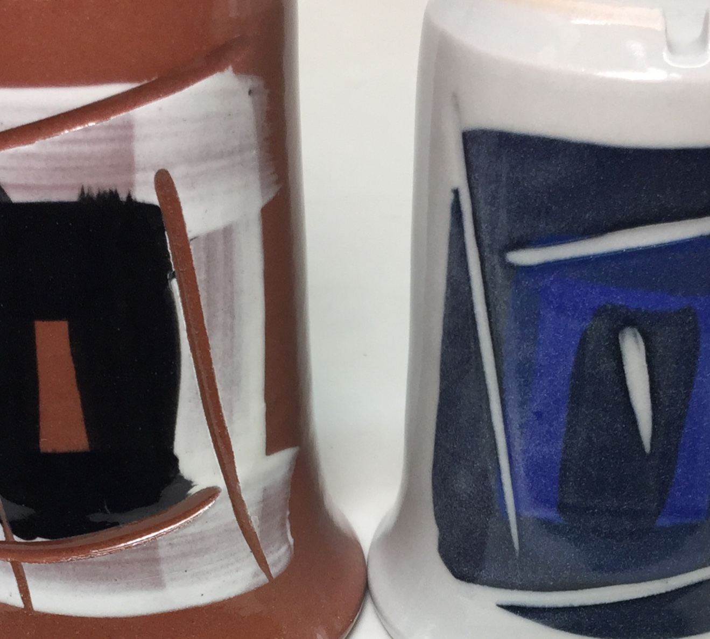
This picture has its own page with more detail, click here to see it.
Medium temperature transparents do not shed micro bubbles as well, clouds of these can dull the underlying colors. Cone 6 transparents must be applied thicker. The stains used to make the underglazes may be incompatible with the chemistry of the clear glaze (less likely at low fire, reactions are less active and firings are much faster so there is less time for hostile chemistry to affect the color). However underglazes can be made to work well at higher temperatures with more fluid melt transparents and soak-and-rise or drop-and-soak firing schedules.
The right transparent glaze makes this underglaze design shine!
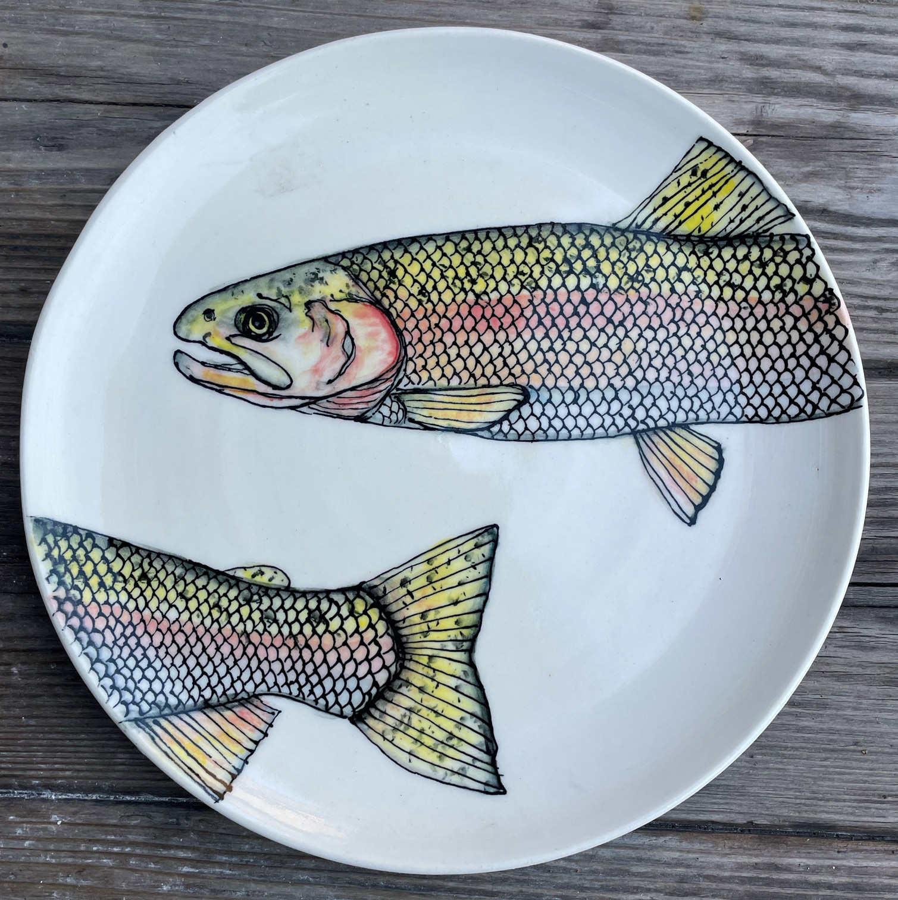
This picture has its own page with more detail, click here to see it.
The underglaze decoration on this cone 6 porcelain plate, by Dana Powell @danaspottery, is undeniably impressive. But the transparent overglaze is equally amazing. Why? It is not easy to get adequate transparency, crisp brushstroke edges and a defect-free surface at cone 6. While a number of factors are at play, perhaps the most important is a controlled thickness and proper adherence and coverage over the underglaze brush strokes (true for any recipe). Dipping glazes tend to go on too thick on the porcelain and don't stick well to underglazes (underglazes are gummed and, when dried, have almost no porosity to adhere an overglaze). A commercial low-specific-gravity gummed brushing glaze is an option; layers go on thinly, enabling careful control of thickness (of course, it can be time-consuming to paint all the layers needed). However, the brushing action can smear the underglaze. Mixing the transparent as a base-coat dipping glaze could be the best answer. With the right amount of gum and water (by experimentation) it will drain fast enough to dry in a minute or so and spread out evenly into a thin, dense and even laydown of the right thickness, one that adheres equally to body and underglaze (of course, a method is needed to hang the draining plate on edge).
Very low specific gravities on two commercial underglazes

This picture has its own page with more detail, click here to see it.
AMACO and Crysanthos. 1.26 (67.5% water) and 1.22 (68% water)! The former is well below their recommended specific gravity of 1.4 (it still paints well but needs more coats and more time to dry and apply them). The Crysanthos, although having a lower specific gravity is more viscous and goes on thicker (so it likely contains more gelling agent). When doing underglaze decorative brushwork it is important to get adequate thickness with each brush stroke, so a higher specific gravity is better. This may be reason enough to consider making your own (by adding stain powders to a base and using Veegum CER to gel the slurry, slow down its drying and harden it well at the dried state).
A 2oz jar of underglaze:
It dries down to 21g of powder!

This picture has its own page with more detail, click here to see it.
At current prices, that is 75 cents/g! Only half is actual stain powder. Before considering cost, note that the high water content of these is actually a benefit; the thixotropic gel has excellent brushing properties, enabling very thin layering. However, more than one layer is needed to achieve opacity and even color.
Because I am all-in on DIY, the elephant in the room is price. In one scenario, using encapsulated red stain and assuming 50% in my underglaze recipe, I calculated a 1500% saving (assuming the same specific gravity)! But it gets better. I make mine with a higher specific gravity and a much lower stain percentage (e.g. 20%) to get the same result. It goes on in one coat. I also fine-tune the degree-of-melt adjusting the feldspar. And I optimize bisque hardness, and thus overpaintability, by adjusting the clay percentage. With my setup, I can weigh and make a 1-pint jar of underglaze in ten minutes. Another bonus: When I find ways to improve, I edit the notes in its recipe record in insight-live (and adjust the procedure or recipe for next time).
When a DIY black underglaze makes sense
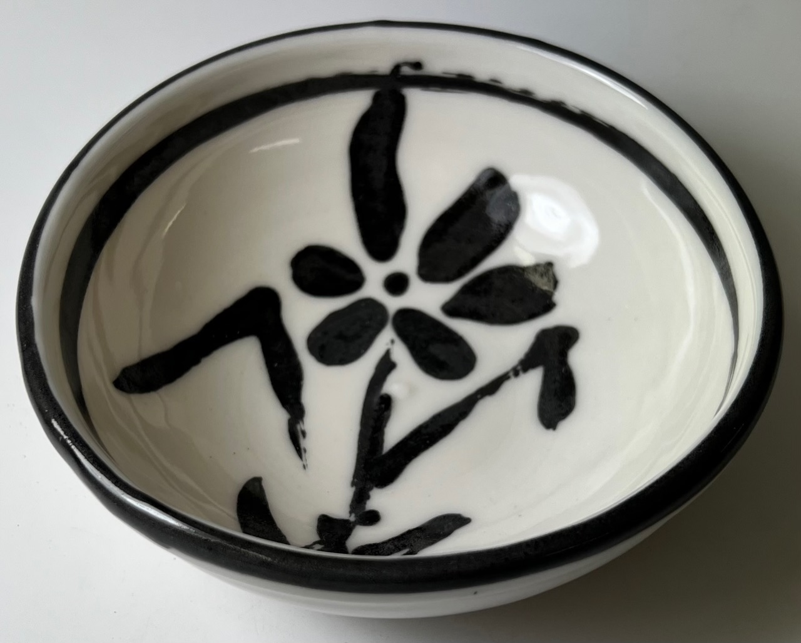
This picture has its own page with more detail, click here to see it.
Black brushwork needs to go on thick enough in one brushstroke. Commercial products we have don't do that - thus my motivation to work on this. Another issue is that they try to cover too wide a firing range (thus they melt too much at the high end and not enough at the low end). I am experimenting on cone 6 Polar Ice porcelain jiggered bowls using G2926B dipping glaze. The base underglaze recipe here is a 90:10 MNP:nepheline syenite mix (use a ballclay/feldspar mix as an alternative). To that, I add 15% black stain, 1.5% CMC gum and 5% bentonite. With the CMC gum and bentonite, and blender mixing, a brushable consistency that stays put can be achieved at a fairly low water content compared to commercial products (enabling it to go on thicker in a single brush stroke). Assuming application at leather hard state, the drying and firing shrinkage can be matched to the body by varying the plasticity of the porcelain used (e.g. the percentage of bentonite it contains). And the percentage of stain can be tuned for enough color but no bleeding, bubble clouding or crystallization. And we can adjust the degree of maturity by varying the proportions of MNP and Nepheline (commercial underglazes often melt too much by cone 6 and fade and diffuse as a result), this one stays opaque black.
Underglazes suitable for making silk screen transfers are another special case. The ideal one needs to cover well like this one. But it also needs to gel and harden enough to hang onto the paper but not so hard that it does not separate and transfer to the ware. Commercial products for brushing are unlikely to be optimal so it makes sense to mix your own and experiment with different amounts of gum.
Blending an engobe and a glaze to produce an underglaze
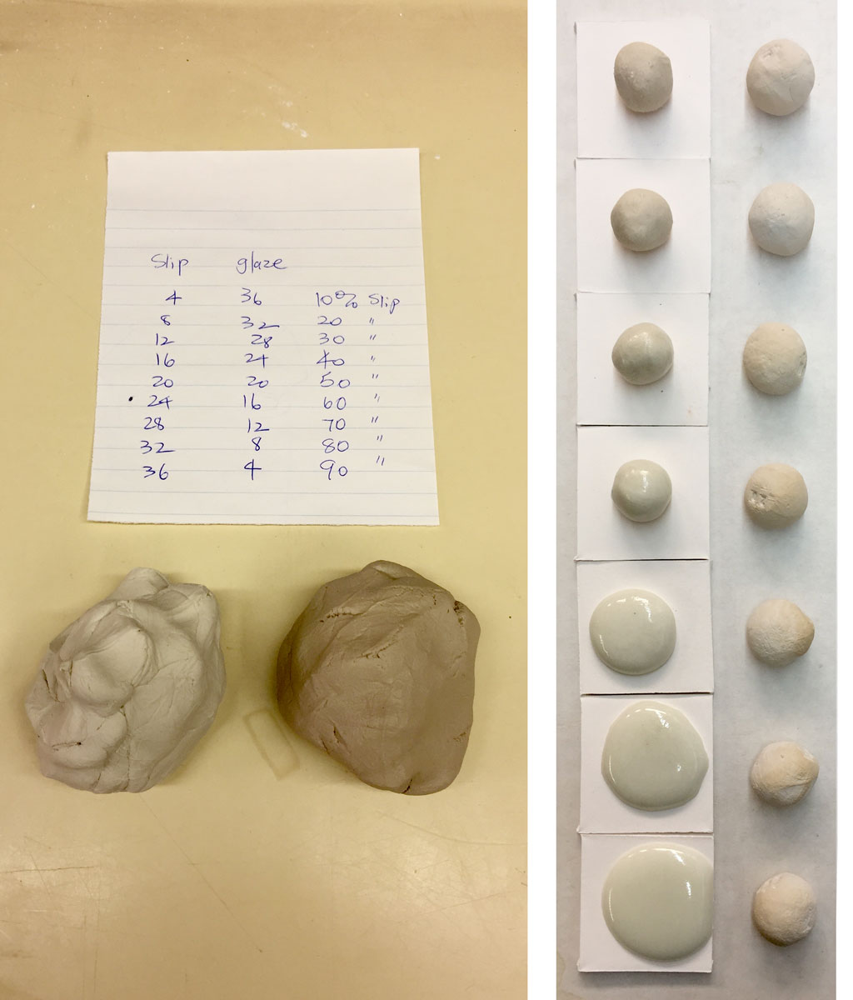
This picture has its own page with more detail, click here to see it.
These fired samples demonstrate how you could develop your own Stroke & Coat glazes. I made these blends by dewatering an engobe (L3954B) and glaze (G2926B) and then hand-mixing each in a line blend. The left column is the fired blends (cone 6), the right one the unfired ones (showing the increase in soluble salts as the percentage of glaze increases). The right one shows the increase in melt fluidity. The top ones are 30:70 glaze:engobe and the bottom ones are 90:10 glaze:engobe. Notice the big change in melt fluidity between 60 and 70% glaze (third and fourth from bottom). And that the 70% one is quite glossy even though it has very low melt fluidity. Somewhere between 60 and 70 we could isolate a glaze-like product having underglaze stability. Stains could be incorporated and the proportion of glaze:underglaze adjusted according to its effect on melt fluidity. You can also use more stain to get vibrant color for thinner applications. Once the right proportions have been determined mix it up like a brushing glaze.
Underglazes require a fluid melt transparent
But extra melt fluidity comes at a cost

This picture has its own page with more detail, click here to see it.
These porcelain mugs were decorated with the same Amaco Velvet underglazes (applied at leather hard), then bisque fired, dipped in clear glaze and fired to cone 6 (using a drop-and-hold schedule). While the G2926B clear glaze (left, A) is a good glossy transparent for general use, its melt fluidity is not enough to clear the LOI micro-bubble clouds that dull the colors below (strangely, underglaze colors can generate them too). However, the G3806C recipe (right, B) has a more fluid melt, which is one factor that better enables bubble escape. Its melt also has a lower surface tension. An additional factor is thickness. A thinner layer of B would be even better (brushing glazes enable thin layering).
But B has downsides. Running is one, but not a factor here because we want it thin. Its high flux content also means it fires less durable. And, its high KNaO content raises the thermal expansion (COE) and thus the danger of crazing. Although it fits this porcelain, it crazes on others.
Underglaze decoration difficult to cover with clear overglaze
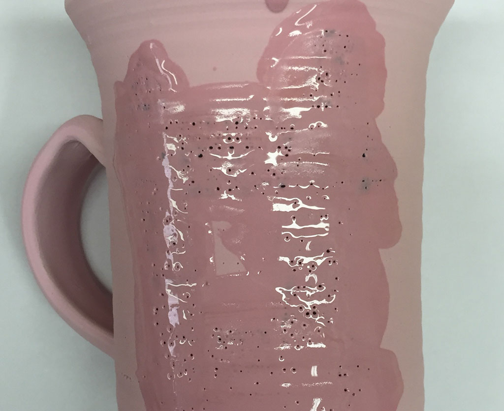
This picture has its own page with more detail, click here to see it.
The underglaze was painted on to bisque ware (has not be fired on). This is a problem. It has a high gum content and has sealed the surface so the porous body underneath is unable to pull water out to dry it quickly. During the slow dry the little absorption that is taking place is generating air bubbles from below and these are producing bare spots. The solution is to either make your own underglaze having a lower gum content or decorate ware in the dry or leather hard stage so the bisque fire will neutralize the gum.
Choose the right transparent glaze to cover your underglaze decoration
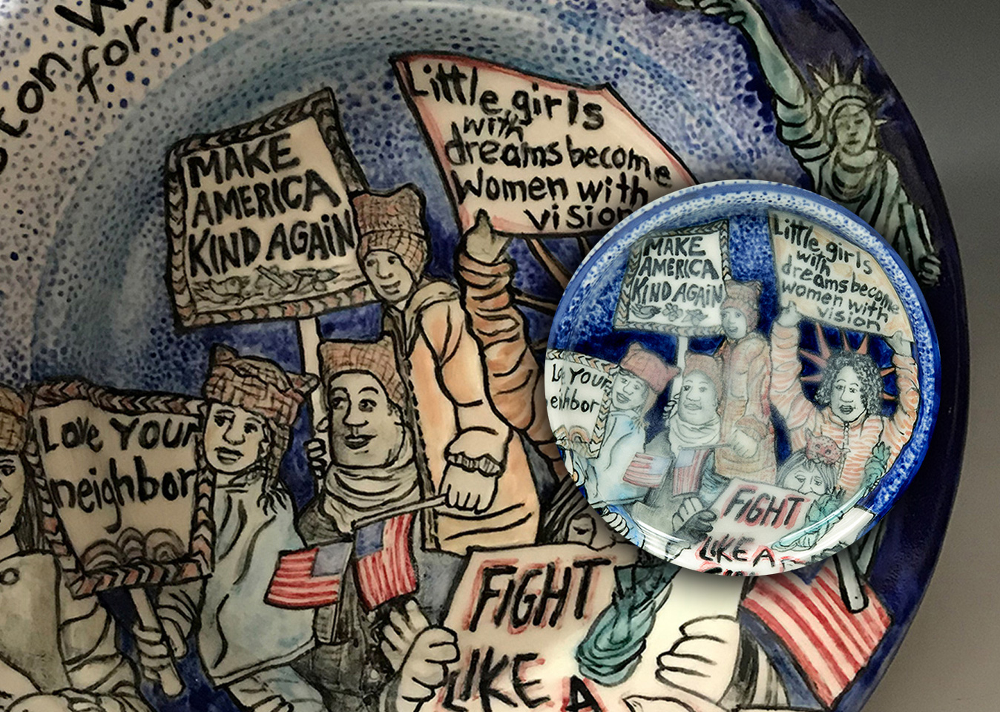
This picture has its own page with more detail, click here to see it.
The background plate was decorated using Amaco Velvets and overglazed with Amaco Glaze HF-9 Zinc-Free clear. The front one was overglazed using Amaco Celadon clear. The hazing of the latter is most evident in the center area where it has been applied in a thicker layer. However this made no difference when using the HF-9 transparent. For complex designs like this it is often better to paint on the clear rather than dip, since the highly gummed Velvet underglazes impede the absorbency of the underlying body, and thus its ability to build up a layer during dip.
The glaze firing reveals that the specific gravity of this V-303 terra cotta under glaze is too low
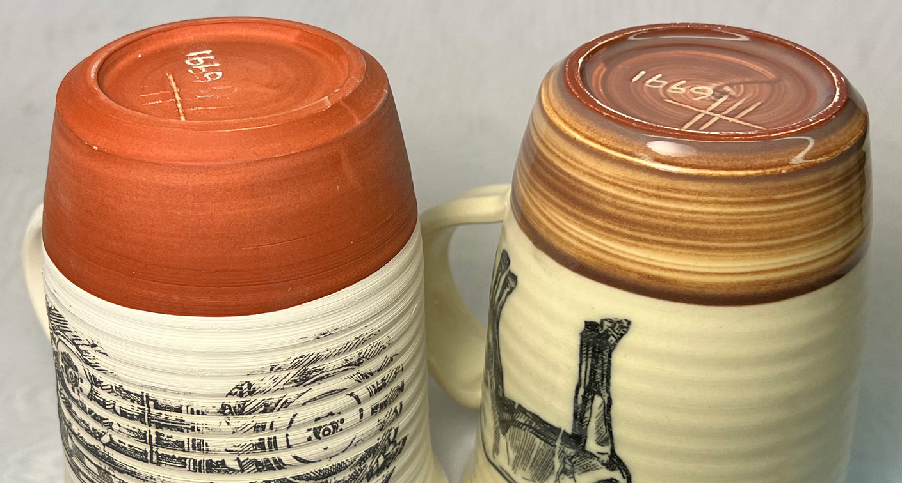
This picture has its own page with more detail, click here to see it.
Amaco V-303 Terra Cotta underglaze was applied in one coat, at leather hard stage (on these Plainsman Snow mugs). It appeared to be thick enough on application and after bisque (left) but the clear overglaze on the right has difused into it to melt it enough to lose the opacity. A higher specific gravity (lower water content) would make it possible to apply it thickly enough in one coat, this is especially important because each layer rewets the piece and adds a lengthy drying period. An appropriate specific gravity is thus the difference beween practical and impractical.
Is your underglaze forming a bond with the body?
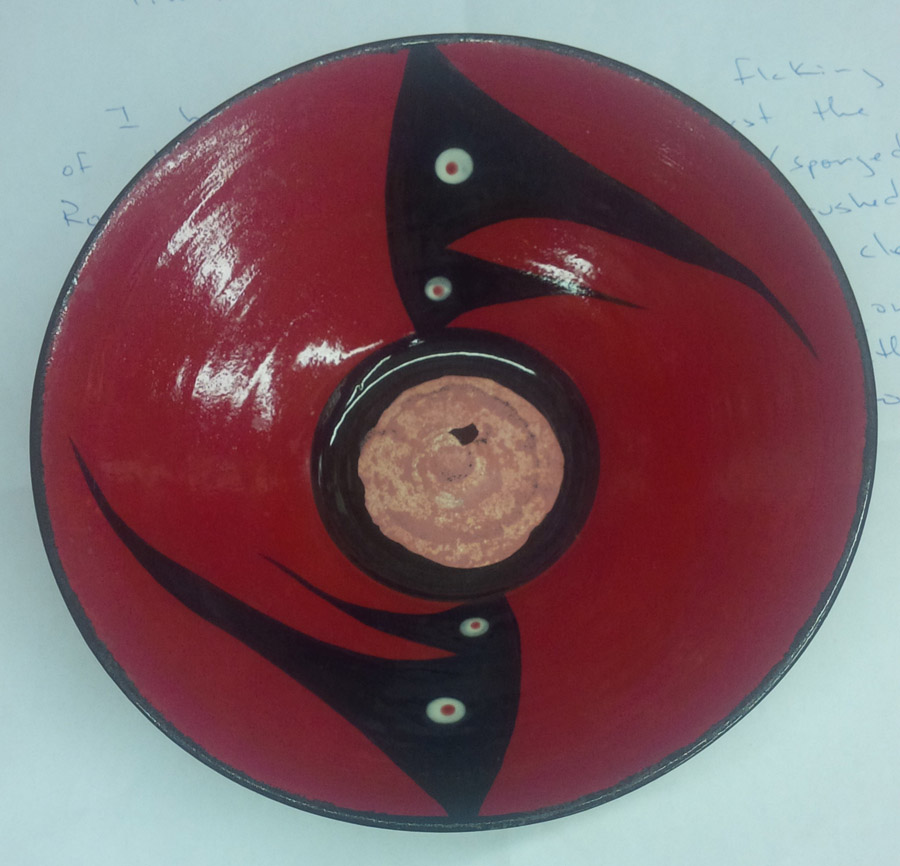
This picture has its own page with more detail, click here to see it.
The red underglaze on this low-fired bowl is not properly fluxed (melted), it does not adhere to the body (this is a commerial product). The bottom-most contour of this bowl is concave and the transparent overglaze, which is under some compression, has popped right off! This is a serious hazard on the inside of functional ware. Each stain has it own melting temperature, and the underglaze formulation using that stain must employ a mix that supplies sufficient fluxes. So test your underglazes (by firing without an overglaze), even if they are a commercial product.
Underglazes can be incompatible with the clear overglaze
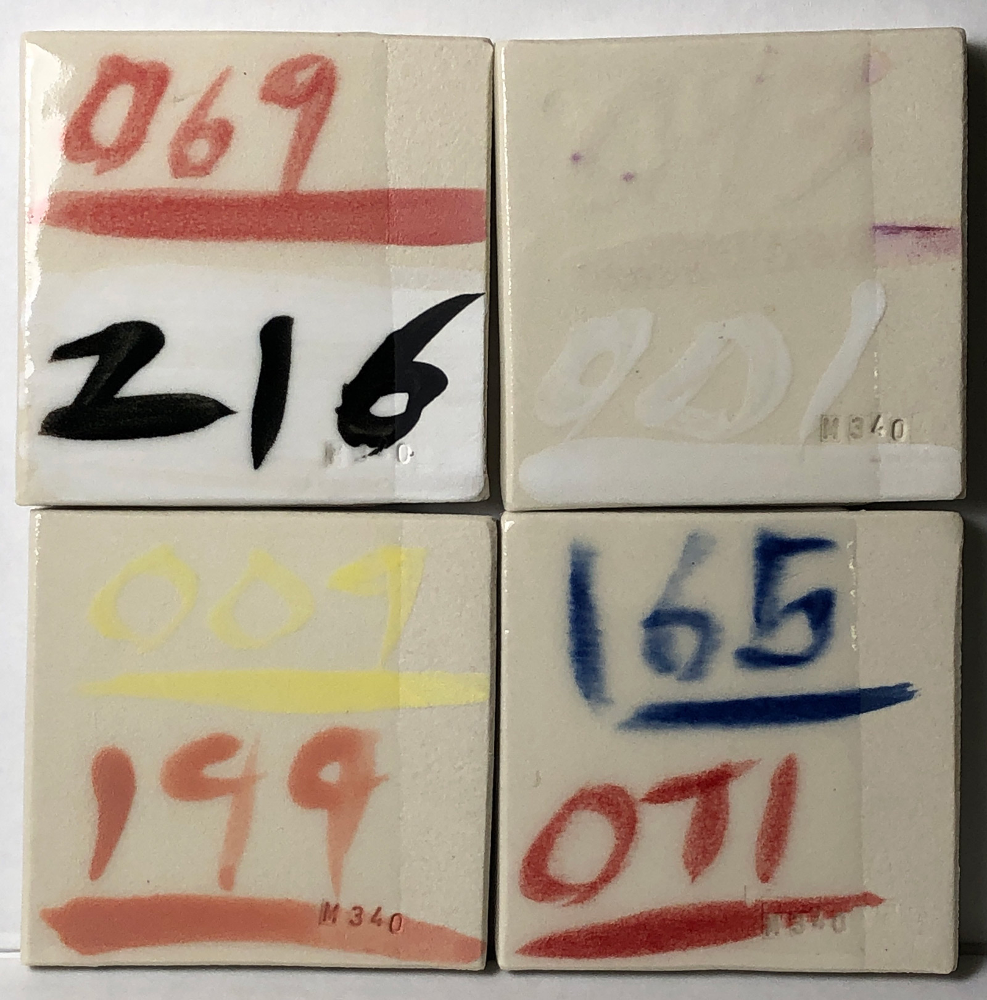
This picture has its own page with more detail, click here to see it.
These are porcelain tiles that we bisque fired, one-coat decorated with underglazes (Crysanthos), glazed with G3806PS fluid-melt glossy clear glaze and fired to cone 6. Fluid melt clear glazes cover colors much better (without crawling or clouding). Some colors are bleeding, if needed this glaze can be adjusted (by adding kaolin) to make it melt a little less. The rose color on the upper right, #093, is not working? Why? It likely employs a chrome-tin stain, these have requirements: A clear glaze having a minimum amount of CaO, no ZnO and not too much B2O3. This glaze does not qualify. But no transparent glaze works with all underglazes. You could find others that work with #093 but they could cloud, craze, crawl and not be glossy enough. The other orange/pink colors here are working. Why? Because they likely employ inclusion stains. A key factor is that the black is working well, even when applied over the white underglaze.
Bleeding underglaze. Why?

This picture has its own page with more detail, click here to see it.
This cobalt underglaze is bleeding into the transparent glaze that covers it. This is happening either because the underglaze is too highly fluxed, the over glaze has too high of a melt fluidity or the firing is being soaked too long. Engobes used under the glaze (underglazes) need to be formulated for the specific temperature and colorant they will host, cobalt is known for this problem so it needs to be hosted in a less vitreous engobe medium. When medium-colorant compounds melt too much they bleed, if too little they do not bond to the body well enough. Vigilance is needed to made sure the formulation is right.
Why dipping transparent glazes may not cover underglazes well
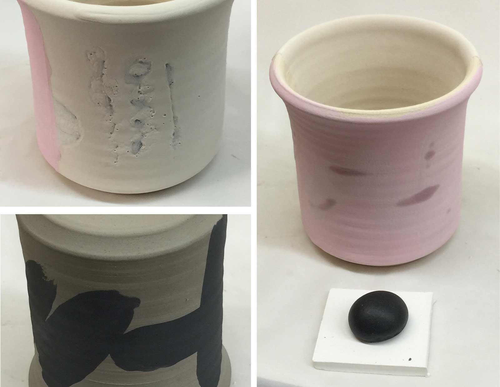
This picture has its own page with more detail, click here to see it.
Underglaze brushstrokes were applied to this test cup at the leather hard stage (lower left) and then bisque fired on. On the lower right a ball of the pure underglaze emerged from the same bisque firing, notice that it is certainly fusing enough to seal the surface of the bisque. Notice what happened on the upper left: Although the bisque piece was immersed in a dipping glaze the underglaze is not covered. Yet on the upper right a just-applied transparent brushing glaze has covered well (although three coats were needed with plenty of drying time between). Why is this? Brushing underglazes contain a lot of CMC gum, it makes them spread well like paint - and dry hard (but also denser and less absorbent). Manufacturers of brushing underglazes assume that gummed brushing glazes will also be used over their products. How can coverage be achieved using a DIY transparent? Mixing your glaze as a thixotropic slurry, a first coat dipping glaze or even as a brushing glaze.
Zero3 Porcelain with underglaze decoration
Fired at cone 03 (in three hours). Clear glaze is G2931K. This porcelain is vitreous and appears very similar to a cone 10 reduction product. By Tony Hansen.
How to make a clear dipping glaze work over solid underglazes
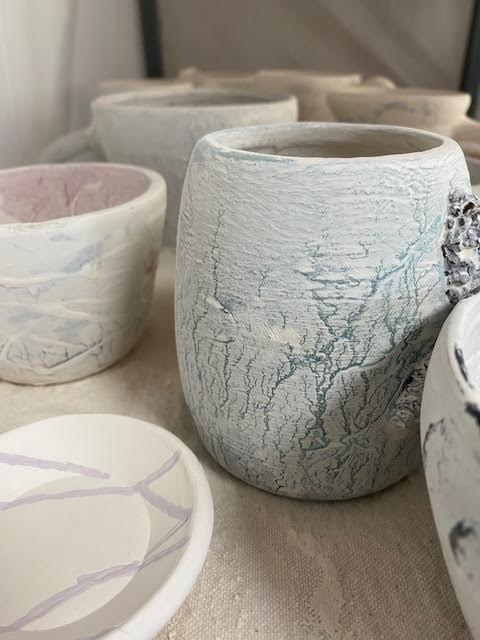
This picture has its own page with more detail, click here to see it.
This is what typically happens when applying a dipping glaze over an underglazed bisque-fired piece - it does not stick. Commercial underglazes impede the absorptive powder of the bisque but it still might be possible to make it work. Here are some options:
- Bisque the under-glazed ware to a low temperature (e.g. cone 010 or lower) and apply dipping glaze to that.
- Make your own underglaze for dipping, leaving out the CMC gum.
- Make your glaze thixotropic - because it is gelled it may hang on in an even layer over the underglaze.
- Make a brushing glaze and paint that over the underglaze. 1%-1.5% CMC gum will make it paintable. 1% additional Veegum will gel it enough that it can tolerate more water and go on thinner, this enables applying multiple coats and gives good control of the final thickness.
Inbound Photo Links
|
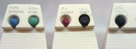 Underglaze color mayhem at cone 5! |
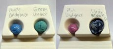 Here is motivation to make your own underglazes! |
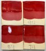 Make AMACO velvet underglazes work better at cone 04 |
 Transparent over-glaze for cone 6 stoneware Is a good one even possible on brush decorated ware? |
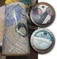 A Clear Glaze Bubbles Over DIY Underglazes: The real solution is in the underglaze recipe |
Links
| Glossary |
Engobe
Engobes are high-clay slurries that are applied to leather hard or dry ceramics. They fire opaque and are used for functional or decorative purposes. They are formulated to match the firing shrinkage and thermal expansion of the body. |
| Glossary |
Transparent Glazes
Every glossy ceramic glaze is actually a base transparent with added opacifiers and colorants. So understand how to make a good transparent, then build other glazes on it. |
| URLs |
https://www.instagram.com/explore/tags/underglaze/
Underglaze decoration at Instagram |
| URLs |
https://glazy.org/recipes/20573
Mason Colorworks white underglaze base recipe with notes on making colors - By Vince Pitelka Also at https://www.vincepitelka.com/wp-content/uploads/2016/03/Mason-Underglaze-Recipe.pdf |
 PayPal | No tracking, No ads, No paywall, No transient content! Just organized, concise information constantly updated and improved. Was this helpful? Consider supporting me. |
| By Tony Hansen Follow me on        |  |
Got a Question?
Buy me a coffee and we can talk 

https://digitalfire.com, All Rights Reserved
Privacy Policy